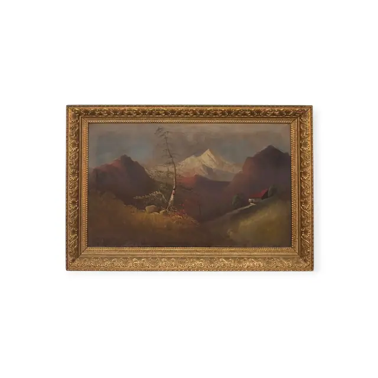
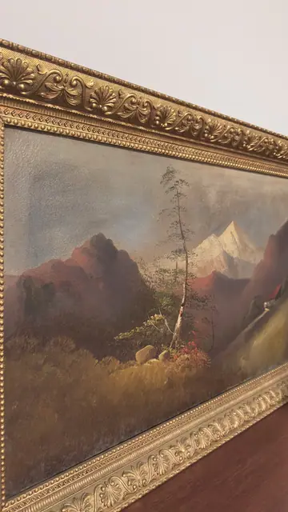
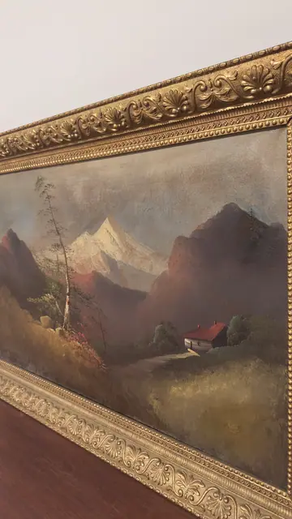

Paintings & Prints
Antique Alpine Landscape Oil in Gilt Frame, Framed
· late 19th to early 20th century
Price Upon Request



About the Item
A darkly atmospheric alpine view: a bare-branched birch rises at the centre left against a wall of plum-brown crags, while a brilliant white snow peak catches the light in the gap between them and a small chalet with a red roof sits on a green shoulder at the right. The foreground is a broad sweep of dry ochre grass with scattered rocks and rust-red scrub. The paint is thin, blended and heavily toned by an old varnish, so the whole picture reads in browns, olives and slate blue with the snow as its single bright note. Medium: oil on canvas. Condition: Varnish is darkened and the surface looks dusty; the frame's gesso ornament shows rubbing and small losses at the corners; no tears or obvious flaking seen in these views.
Details
- Creation Year:
- late 19th to early 20th century
- Dimensions:
- Height: 28.5 in (72.39 cm)
Width: 42.4 in (107.7 cm)
outside of frame - Medium:
- oil on canvas
- Period:
- 20Th
- Condition:
- Offered in the condition shown in the photographs.
- Reference Number:
- VO-109
- Documentation:
- no certificate or label photographed; the back was not shown